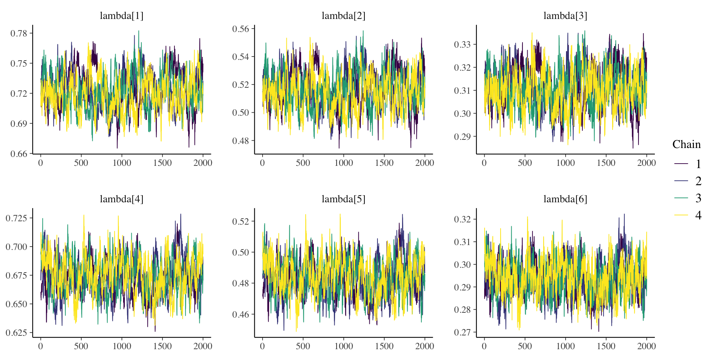
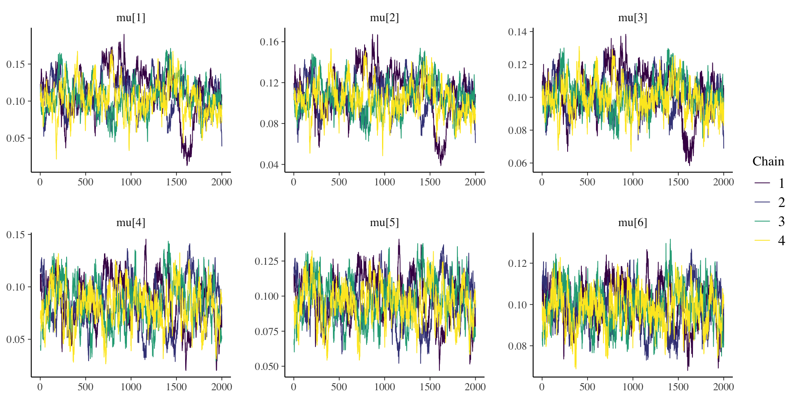
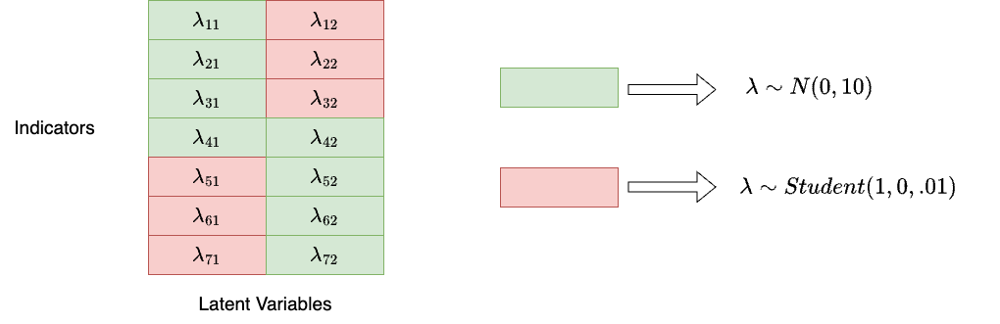

%%{init: {"flowchart": {"htmlLabels": false}} }%%
graph TD
subgraph "Measurement Procedure"
subgraph Modeling
direction LR
Start --> id1
id1([Specify model]) --> id2(["`Specify scale identification
method for latent variables`"])
id2 --> id3([Estimate model])
id3 --> id4{Adequate fit indices}
id4 -- No --> id1
end
Modeling -- Model fit acceptable --> one
subgraph one["Evaluation: Measurement Model with Auxiliary Components"]
direction LR
id5(["Score estimation
and secondary analyses with scores"]) --> id6([Item evaluation])
id6 --> id7([Scale construction])
id7 --> id8([Equating])
id8 --> id9([Measure Invariance/Differential item functioning])
id9 --> End
end
end
style Start fill:#f9f,stroke:#333,stroke-width:5px
style End fill:#bbf,stroke:#333,stroke-width:5px
Lecture 06
Generalized Measurement Models: An Introduction
Jihong Zhang
Educational Statistics and Research Methods
Today’s Lecture Objectives
Introduce measurement (psychometric) models in general
Describe the steps needed in a psychometric model analysis
Dive deeper into the observed-variables modeling aspect
Measurement Model in general
Measurement Model Analysis Steps
Components of a Measurement Model
There are two components of a measurement model
Theory (what we cannot see but assume its existence):
Latent variable(s)
-
Other effects as needed by a model
Random effects (e.g., initial status and slopes in Latent Growth Model)
Testlet effects (e.g., a group-level variation among items)
Effects of observed variables (e.g., gender differences, DIF, Measurement Invariance)
Data (what we can see and we assume generated by theory):
-
Outcomes
An assumed distribution for each outcome
A key statistic of outcome for the model (e.g., mean, sd)
A link function
General form for measurement model (SEM, IRT):
\[ f(E(\mathbf{Y}\mid\Theta)) = \boldsymbol{\mu} +\Theta\Lambda^T \]
and
\[ \Lambda_j = Q \odot \boldsymbol{\lambda_j} \]
Assume N as sample size, P as number of factors, J as number of items. Then,
- \(f()\): link function. CFA: identity link; IRT: logistic/probit link
- \(E(\mathbf{Y}\mid\Theta)\): Expected/Predicted values of outcomes
- \(\Theta\): latent factor scores matrix (N \(\times\) P)
-
\(\Lambda\): A factor loading matrix (J \(\times\) P)
\(\Lambda_j\): \(j\)th row vector of factor loading matrix
\(\textbf{Q}\): Q-matrix represents the connections between items and latent variables
\(\boldsymbol{\lambda}_j\): a vector of factor loading vectors for item \(j\)
- \(\mu\): item intercepts (J \(\times\) 1)
Example 1 with general form
Let’s consider a measurement model with only one latent variable and five items:
%%{init: {"flowchart": {"htmlLabels": false}} }%%
flowchart TD
id1((θ)) --> id2["Y1"]
id1 --> id3["Y2"]
id1 --> id4["Y3"]
id1 --> id5["Y4"]
id1 --> id6["Y5"]
The model shows:
One latent variable (\(\theta\))
Five observed variables (\(\mathbf{Y} = \{Y_1, Y_2, Y_3, Y_4, Y_5\}\))
Then,
\(\Theta\) = \(\begin{bmatrix} \theta_1, \\\theta_2,\\ \cdots,\\ \theta_N \end{bmatrix}\)
\(\Lambda^T\) = \(\begin{bmatrix}\lambda_1, \lambda_2, ..., \lambda_5 \end{bmatrix}\)
Example 2 with general form
Let’s consider a measurement model with only two latent variables and five items:
%%{init: {"flowchart": {"htmlLabels": false}} }%%
flowchart TD
theta1((θ1)) --> id2["Y1"]
theta1 --> id3["Y2"]
theta1 --> id4["Y3"]
theta1 --> id5["Y4"]
theta1 --> id6["Y5"]
theta2((θ2)) --> id2["Y1"]
theta2 --> id3["Y2"]
theta2 --> id4["Y3"]
theta2 --> id5["Y4"]
theta2 --> id6["Y5"]
The model shows:
Two latent variables (\(\theta_1\), \(\theta_2\))
Five observed variables (\(\mathbf{Y} = \{Y_1, Y_2, Y_3, Y_4, Y_5\}\))
Then,
\(\Theta\) = \(\begin{bmatrix} \theta_{1,1}, \theta_{1,2}\\\theta_{2,1}, \theta_{2,2}\\ \cdots,\cdots \\ \theta_{N, 1}, \theta_{N,2} \end{bmatrix}\) \(\sim [0, \Sigma]\)
\(\Lambda^T\) = \(\begin{bmatrix}\lambda_{1,1}, \lambda_{1,2}, ..., \lambda_{1,5}\\\lambda_{2,1}, \lambda_{2,2}, ..., \lambda_{2,5}\end{bmatrix}\)
Example 3 with general form
Let’s consider a measurement model with only two latent variables and five items:
%%{init: {"flowchart": {"htmlLabels": false}} }%%
flowchart TD
theta1((θ1)) --> id2["Y1"]
theta1 --> id3["Y2"]
theta1 --> id4["Y3"]
theta2((θ2)) --> id4["Y3"]
theta2 --> id5["Y4"]
theta2 --> id6["Y5"]
The model shows:
Two latent variables (\(\theta_1\), \(\theta_2\))
Five observed variables (\(\mathbf{Y} = \{Y_1, Y_2, Y_3, Y_4, Y_5\}\))
Then,
\(\Theta\) = \(\begin{bmatrix} \theta_{1,1}, \theta_{1,2}\\\theta_{2,1}, \theta_{2,2}\\ \cdots,\cdots \\ \theta_{N, 1}, \theta_{N,2} \end{bmatrix}\) \(\sim [0, \Sigma]\)
\(\Lambda^T\) = \(\begin{bmatrix}\lambda_{1,1}, \lambda_{1,2}, \lambda_{1,3}, 0,0\\ 0, 0, \lambda_{2,3}, \lambda_{2,4}, \lambda_{2,5}\end{bmatrix}\)
Note that we only limit our model to main-effect models. Interaction effects of factors introduce more complexity.
It is difficulty to specify factor loadings with \(0\)s directly
Item-specific form
For each item j:
\[ \mathbf{Y_j} \sim N(\mu_j+ \boldsymbol{\lambda}_{j}Q_j\Theta, \psi_j) \]
Bayesian view: latent variables
Latent variables in Bayesian are built by following specification:
-
What are their distributions? (normal distribution or others)
For example, \(\theta_i\) values for one person and \(\theta\) values for samples. Factor score \(\theta\) is a mixture distribution of distributions of each individual’s factor score \(\theta_i\)
But, in MLE/WSLMV, we do not estimate mean and sd of each individual’s factor score for model to be converged
Code
library(tidyverse)
set.seed(12)
N = 15
ndraws = 200
FS = matrix(NA, nrow = N, ndraws)
FS_p = rnorm(N)
FS_p = FS_p[order(FS_p)]
for (i in 1:N) {
FS[i,] = rnorm(ndraws, mean = FS_p[i], sd = 1)
}
FS_plot <- as.data.frame(t(FS))
colnames(FS_plot) <- paste0("Person", 1:N)
FS_plot <- FS_plot |> pivot_longer(everything(), names_to = "Person", values_to = "Factor Score")
FS_plot$Person <- factor(FS_plot$Person, levels = paste0("Person", 1:N))
ggplot() +
geom_density(aes(x = `Factor Score`, fill = Person, col = Person ), alpha = .5, data = FS_plot) +
geom_density(aes(x = FS_p))- Multidimensionality
- How many factors to be measured?
- If \(\geq\) 2 factors, we specify mean vectors and variance-covariance matrix
- To link latent variables with observed variables, we need to create a indicator matrix of coefficient/effects of latent variable on items.
- In diagnostic modeling and multidimensional IRT, we call it Q-matrix
Simulation Study 1
- Let’s perform a small simulation study to see how to perform factor analysis in naive Stan.
- The model specification is a two-factor with each measured by 3 items. In total, there are 6 items with continuous responses. Sample size is 1000.
Model Specification
Data Simulation
# Two-factor model without cross-loadings
library(tidyverse)
library(cmdstanr)
set.seed(1234)
N <- 1000
J <- 6
# parameters
psi <- .3 # factor correlation
sigma <- .1 # residual varaince
FS <- mvtnorm::rmvnorm(N, mean = c(0, 0),
sigma = matrix(c(1, psi, psi, 1),
2, 2, byrow = T))
Lambda <- matrix(
c(
0.7, 0,
0.5, 0,
0.3, 0,
0, 0.7,
0, 0.5,
0, 0.3
), 6, 2,
byrow = T
)
mu <- matrix(rep(0.1, J), nrow = 1, byrow = T)
residual <- mvtnorm::rmvnorm(N, mean = rep(0, J), sigma = diag(sigma, J))
Y <- t(apply(FS %*% t(Lambda), 1, \(x) x + mu)) + residual
head(Y) [,1] [,2] [,3] [,4] [,5] [,6]
[1,] -1.0136367 -0.50699773 -0.2803124 0.5407292 -0.37811988 -0.2033511
[2,] 0.0508203 0.62021463 0.1737470 -1.9893740 -1.23623703 -0.8609000
[3,] 0.5446843 0.52674674 -0.1523788 0.8198787 0.53021452 0.3435667
[4,] -0.2721033 -0.08877619 0.2124482 -0.5066111 -0.19928765 0.7955025
[5,] -0.7291450 -0.15306919 -0.5626197 -0.5083901 -0.07438493 -0.9338468
[6,] -0.5210657 0.50114831 -0.3317205 -1.0916717 -0.28489250 -0.4464051Strategies for Stan: factor loadings
- We will iterate over item response function across each item
- To benefit from the efficiency of vectorization, we specify a vector of factor loadings with length 6
\(\{\lambda_1, \lambda_2, \cdots, \lambda_6 \}\)
Optionally, a matrix with number of items by number of factor for \(\lambda\)s can be specified like \(\lambda_{11}\) and \(\lambda_{62}\), that introduces flexibility but complexity
- We should have a location table telling
stanthe information about which factor each factor loading belong to- For example, \(\lambda_{1}\) belongs to factor 1 and \(\lambda_4\) belong to factor 2
Strategies for Stan: prior distribution and hyperparameters
- residual variances for items: \(\sigma \sim \text{exponential}(sigmaRate)\)
- sigmaRate is set to 1
- item intercepts: \(\mu \sim \text{MVN}(meanMu, covMu)\)
meanMu is set to a vector of 0s with length 6
covMu is set to a diagonol matrix of 1000 with 6 \(\times\) 6
- factor scores: \(\Theta \sim \text{MVN}(meanTheta, corrTheta)\)
meanTheta is set to a vector of 0s with length 2
\(corrTheta \sim lkj\_corr(eta)\) and eta is set to 1
Optionally, \(L \sim lkj\_corr\_cholesky(eta)\) and corrTheta = LL’
- factor loadings: \(\Lambda \sim \text{MVN}(meanLambda, covLambda)\)
meanLambda is set to a vector of 0s with length 6 (number of items)
covLambdais set to a matrix of \(\begin{pmatrix}1000, 0,\cdots,0\\ \cdots\\0, 0, \cdots1000\end{pmatrix}\)
Question: what about factor correlation \(\psi\)?
See this blog and Stan’s reference for Choleskey decomposition
For eta = 1, the distribution is uniform over the space of all correlation matrices
Data Structure and Data Block
Lecture06.R
data_list <- list(
N = 1000, # number of subjects/observations
J = J, # number of items
K = 2, # number of latent variables,
Y = Y,
Q = Q,
# location/index of lambda
kk = loc[,2],
#hyperparameter
sigmaRate = .01,
meanMu = rep(0, J),
covMu = diag(1000, J),
meanTheta = rep(0, 2),
eta = 1,
meanLambda = rep(0, J),
covLambda = diag(1000, J)
)simulation_loc.stan
data {
int<lower=0> N; // number of observations
int<lower=0> J; // number of items
int<lower=0> K; // number of latent variables
matrix[N, J] Y; // item responses
//location/index of lambda
array[J] int<lower=0> kk;
//hyperparameter
real<lower=0> sigmaRate;
vector[J] meanMu;
matrix[J, J] covMu; // prior covariance matrix for coefficients
vector[K] meanTheta;
vector[J] meanLambda;
matrix[J, J] covLambda; // prior covariance matrix for coefficients
real<lower=0> eta; // LKJ shape parameters
}Parameter and Transformed Parameter block
simulation_loc.stan
parameters {
vector[J] mu; // item intercepts
vector<lower=0,upper=1>[J] lambda; // factor loadings
vector<lower=0>[J] sigma; // the unique residual standard deviation for each item
matrix[N, K] theta; // the latent variables (one for each person)
cholesky_factor_corr[K] L; // L of factor correlation matrix
}
transformed parameters{
matrix[K,K] corrTheta = multiply_lower_tri_self_transpose(L);
}Note that L is the cholesky decomposition factor of factor correlation matrix
- It is also a lower triangle matrix
- use
cholesky_factor_corr[K]to declare this parameter - Sometime, parameters are those that are easy to sampling,
transformed parametersblock is used to transform your parameters to those that are difficulty to direct sampling.
Model block
Lecture06.R
data_list <- list(
N = 1000, # number of subjects/observations
J = J, # number of items
K = 2, # number of latent variables,
Y = Y,
Q = Q,
# location/index of lambda
kk = loc[,2],
#hyperparameter
sigmaRate = .01,
meanMu = rep(0, J),
covMu = diag(1000, J),
meanTheta = rep(0, 2),
eta = 1,
meanLambda = rep(0, J),
covLambda = diag(1000, J)
)simulation_loc.stan
model {
mu ~ multi_normal(meanMu, covMu);
sigma ~ exponential(sigmaRate);
lambda ~ multi_normal(meanLambda, covLambda);
L ~ lkj_corr_cholesky(eta);
for (i in 1:N) {
theta[i,] ~ multi_normal(meanTheta, corrTheta);
}
for (j in 1:J) { // loop over each item response function
Y[,j] ~ normal(mu[j]+lambda[j]*theta[,kk[j]], sigma[j]);
}
}Note that kk[j] selects which factor to be multiplied dependent on factor loading’s index. That why we have a location matrix of factor loadings. Theta in loc table is kk.
Generated quantities block
simulation_loc.stan
generated quantities {
vector[N * J] log_lik;
matrix[N, J] temp;
matrix[N, J] Y_rep;
vector[J] Item_Mean_rep;
for (i in 1:N) {
for (j in 1:J) {
temp[i, j] = normal_lpdf(Y[i, j] | mu[j]+lambda[j]*theta[i,kk[j]], sigma[j]);
}
}
log_lik = to_vector(temp);
for (j in 1:J) {
Y_rep[,j] = to_vector(normal_rng(mu[j]+lambda[j]*theta[,kk[j]], sigma[j]));
Item_Mean_rep[j] = mean(Y_rep[,j]);
}
}To obtain leave-one-out (LOO) model fitting, we need to generate log-likelihood:
log_likincludes both person information and item information in factor analysis and IRTlog_likmust be a vector in StanThus, the length of log-likelihood must be a vector of length N \(\times\) J
To conduct posterior predictive model checking, we need to generate simulation data sets: Y_rep
Y_repcan be generated usingnormal_rngand posterior draws of parametersItem_Mean_repwere generated to compared to observed item means
Model Estimation
Here, my MCMC estimation is set to:
- Four MCMC chains that are running parallel
- A seed as 1234 for replication
- The warmup iteration is 1000 and the sampling iteration is 2000. Thus, the total iteration is 3000.
- Since we have 4 chains, the total iteration for summary statistics is 12000 iterations.
mod_cfa_twofactor <- cmdstan_model(here::here("posts", "2024-01-12-syllabus-adv-multivariate-esrm-6553", "Lecture06", "Code", "simulation_loc.stan"))
fit_cfa_twofactor <- mod_cfa_twofactor$sample(
data = data_list,
seed = 1234,
chains = 4,
parallel_chains = 4,
iter_sampling = 2000,
iter_warmup = 1000
)MCMC Result > Model diagnostic > PPMC
Item_Mean_rep_mat <- fit_cfa_twofactor$draws("Item_Mean_rep", format = 'matrix')
Item_Mean_obs <- colMeans(Y)
PPP <- rep(NA, J)
for (item in 1:J) {
PPP[item] <- mean(Item_Mean_rep_mat[, item] > Item_Mean_obs[item])
}
data.frame(
Item = factor(1:J, levels = 1:J),
PPP = PPP
) |>
ggplot() +
geom_col(aes(x = Item, y = PPP)) +
geom_hline(aes(yintercept = .5), col = 'red', size = 1.3) +
theme_classic()All items have PPP of item mean close to 0.5, suggesting great model-data fitting.
MCMC Result > Model diagnostic > LOO
We firt examined the max/mean PSRF (rhat) for convergence. This is also called Gelman and Rubin diagnosis. The maximum RSRF is 1.03 suggesting MCMC estimation converged.
Then, we examined the LOO with PSIS. According to Pareto K diagnostic, most log-likelihood estimation suggests good reliability.
Question: Why we have 8000 \(\times\) 6000 log-likelihood elements? hints: our information in data
library(posterior)
fit_cfa_twofactor$summary(
variables = NULL,
"rhat"
) |>
summarise(mean_rhat = mean(rhat, na.rm = T),
max_rhat = max(rhat, na.rm = T))# A tibble: 1 × 2
mean_rhat max_rhat
<dbl> <dbl>
1 1.00 1.03
Computed from 8000 by 6000 log-likelihood matrix
Estimate SE
elpd_loo 4074.8 54.5
p_loo 1844.1 29.4
looic -8149.5 108.9
------
Monte Carlo SE of elpd_loo is NA.
Pareto k diagnostic values:
Count Pct. Min. n_eff
(-Inf, 0.5] (good) 3888 64.8% 677
(0.5, 0.7] (ok) 1559 26.0% 174
(0.7, 1] (bad) 532 8.9% 12
(1, Inf) (very bad) 21 0.4% 13
See help('pareto-k-diagnostic') for details.MCMC Results > Estimation > Factor Loadings
Benchmark model using lavaan
# lavaan
library(lavaan)
mod <- "
F1 =~ I1 + I2 + I3
F2 =~ I4 + I5 + I6
"
dat <- as.data.frame(Y)
colnames(dat) <- paste0('I', 1:6)
fit <- cfa(mod, data = dat, std.lv = TRUE)
lavaan::parameterestimates(fit) |> filter(op == "=~") lhs op rhs est se z pvalue ci.lower ci.upper
1 F1 =~ I1 0.724 0.021 34.229 0 0.682 0.765
2 F1 =~ I2 0.521 0.017 31.478 0 0.489 0.554
3 F1 =~ I3 0.321 0.013 25.484 0 0.296 0.345
4 F2 =~ I4 0.666 0.020 33.504 0 0.627 0.705
5 F2 =~ I5 0.487 0.016 30.775 0 0.456 0.518
6 F2 =~ I6 0.306 0.013 24.022 0 0.281 0.331Model 1 using Stan
# A tibble: 6 × 6
variable mean median sd q5 q95
<chr> <dbl> <dbl> <dbl> <dbl> <dbl>
1 lambda[1] 0.723 0.722 0.0175 0.694 0.752
2 lambda[2] 0.516 0.516 0.0127 0.495 0.537
3 lambda[3] 0.311 0.311 0.00791 0.298 0.324
4 lambda[4] 0.674 0.674 0.0151 0.649 0.699
5 lambda[5] 0.484 0.484 0.0111 0.466 0.502
6 lambda[6] 0.294 0.294 0.00727 0.282 0.306We can easily notice how consistent between estimates of lavaan with Stan :
-
estinlavaancorresponds tomeanormedianinstan. Their difference is around .001 - .002. -
seinlavaancorresponds tosdinstan -
ci.lowerandci.upperin lavaan is for 95% confidence interval, so they have larger range thanq5andq95in Stan, which is for 90% Credible Interval - 90% CI is the default setting, but we can calculate Bayesian 95% Credible Interval using
$summary()
MCMC Results > Visualization > Factor Loadings
MCMC Results > Estimation > Factor Correlation
The factor correlation (Psi = .3) is represented by the non-diagonal elements of factor correlation.
There are two ways to check estimation of factor correlation:
- Since we use LKJ sampling with
LCholesky factor, recall thatLis lower triangle of factor correlation.
# A tibble: 1 × 10
variable mean median sd mad q5 q95 rhat ess_bulk ess_tail
<chr> <dbl> <dbl> <dbl> <dbl> <dbl> <dbl> <dbl> <dbl> <dbl>
1 L[2,1] 0.318 0.318 0.0283 0.0286 0.272 0.365 1.00 1836. 4208.- We can also look at the elements of factor correlation matrix
# A tibble: 2 × 10
variable mean median sd mad q5 q95 rhat ess_bulk ess_tail
<chr> <dbl> <dbl> <dbl> <dbl> <dbl> <dbl> <dbl> <dbl> <dbl>
1 corrTheta[1,2] 0.318 0.318 0.0283 0.0286 0.272 0.365 1.00 1836. 4208.
2 corrTheta[2,1] 0.318 0.318 0.0283 0.0286 0.272 0.365 1.00 1836. 4208.MCMC Results > Visualization > Factor Correlation
- We can also visual inspect trace plots of MCMC draws of
L
MCMC Results > Estimation > Item Intercepts
Item intercepts are set to .1. Let’s see what Bayesian model recovers the true values
# A tibble: 6 × 10
variable mean median sd mad q5 q95 rhat ess_bulk ess_tail
<chr> <dbl> <dbl> <dbl> <dbl> <dbl> <dbl> <dbl> <dbl> <dbl>
1 mu[1] 0.106 0.106 0.0247 0.0231 0.0673 0.147 1.03 83.2 122.
2 mu[2] 0.106 0.106 0.0177 0.0167 0.0777 0.135 1.03 85.8 144.
3 mu[3] 0.101 0.101 0.0109 0.0102 0.0836 0.119 1.03 88.6 130.
4 mu[4] 0.0842 0.0844 0.0208 0.0217 0.0488 0.118 1.02 128. 328.
5 mu[5] 0.0966 0.0968 0.0151 0.0157 0.0707 0.121 1.02 129. 348.
6 mu[6] 0.0989 0.0990 0.00952 0.00983 0.0828 0.114 1.02 138. 401.We notices item 4 is little off with true values.
MCMC Results > Estimation > Residual variances
# A tibble: 6 × 10
variable mean median sd mad q5 q95 rhat ess_bulk ess_tail
<chr> <dbl> <dbl> <dbl> <dbl> <dbl> <dbl> <dbl> <dbl> <dbl>
1 sigma[1] 0.107 0.108 0.00688 0.00674 0.0961 0.118 1.01 747. 1009.
2 sigma[2] 0.0995 0.0995 0.00412 0.00412 0.0928 0.106 1.00 1178. 2166.
3 sigma[3] 0.0961 0.0960 0.00254 0.00251 0.0919 0.100 1.00 5741. 6069.
4 sigma[4] 0.0991 0.0993 0.00676 0.00644 0.0877 0.110 1.00 738. 1131.
5 sigma[5] 0.0962 0.0962 0.00408 0.00416 0.0894 0.103 1.00 1221. 2231.
6 sigma[6] 0.0998 0.0998 0.00256 0.00260 0.0957 0.104 1.00 6468. 5918.Simulation Study 2
- To illustrate how to model a more complex CFA with cross-loadings, let’s generate a new simulation data with test length 7 and two latent variables
- The mean structure of model is like this, each latent variable was measured by 4 items. The other parameters are as same as Model 1.
Mean Structure of Model 2
Strategies for Model 2
The general idea is that we assign a uninformative prior distribution for “main” factor loadings, and assign informative “close-to-zero” prior distribution for “zero” factor loadings:
Strategies for Model 2 (Cont.)
- Have a more detailed location matrix for factor loading matrix
- We can transform the information of factor loading into:
## Transform Q to location index
loc2 <- Q2 |>
as.data.frame() |>
rename(`1` = V1, `2` = V2) |>
rownames_to_column("Item") |>
pivot_longer(c(`1`, `2`), names_to = "Theta", values_to = "q") |>
mutate(across(Item:q, as.numeric)) |>
mutate(q = -q + 2) |>
as.matrix()
as.data.frame(loc2) Item Theta q
1 1 1 1
2 1 2 2
3 2 1 1
4 2 2 2
5 3 1 1
6 3 2 2
7 4 1 1
8 4 2 1
9 5 1 2
10 5 2 1
11 6 1 2
12 6 2 1
13 7 1 2
14 7 2 1Where
Itemrepresents the index of item a factor loading belongs to, andThetarepresents the index of latent variables a factor loading belongs to.In Stan’s data block, we denote
Itemof location matrix asjjandThetaaskk.qrepresents two types of prior distributions for factor loadings.
Data Structure and Data Block
Lecture06.R
data_list2 <- list(
N = 1000, # number of subjects/observations
J = J2, # number of items
K = 2, # number of latent variables,
Y = Y2,
Q = Q2,
# location of lambda
R = nrow(loc2),
jj = loc2[,1],
kk = loc2[,2],
q = loc2[,3],
#hyperparameter
meanSigma = .1,
scaleSigma = 1,
meanMu = rep(0, J2),
covMu = diag(10, J2),
meanTheta = rep(0, 2),
corrTheta = matrix(c(1, .3, .3, 1), 2, 2, byrow = T)
)simulation_exp2.stan
data {
int<lower=0> N; // number of observations
int<lower=0> J; // number of items
int<lower=0> K; // number of latent variables
matrix[N, J] Y; // item responses
int<lower=0> R; // number of rows in location matrix
array[R] int<lower=0>jj;
array[R] int<lower=0>kk;
array[R] int<lower=0>q;
//hyperparameter
real<lower=0> meanSigma;
real<lower=0> scaleSigma;
vector[J] meanMu;
matrix[J, J] covMu; // prior covariance matrix for coefficients
vector[K] meanTheta;
matrix[K, K] corrTheta;
}Note that for the simplicity of estimation, I specified the factor correlation matrix as fixed. If you are interested in estimating factor correlation, you can refer to the previous model using LKJ sampling.
Parameters block
simulation_exp2.stan
parameters {
vector<lower=0,upper=1>[J] mu;
matrix<lower=0>[J, K] lambda;
vector<lower=0,upper=1>[J] sigma; // the unique residual standard deviation for each item
matrix[N, K] theta; // the latent variables (one for each person)
//matrix[K, K] corrTheta; // not use corrmatrix to avoid duplicancy of validation
}For parameters block, the only difference is we specify lambda as a matrix with J \(\times\) K, which is 7 \(\times\) 2 in our case.
Model block
As you can see, in Model block, we need to use if_else in Stan to specify factor loadings in different locations
- For type 1 (green), we specify a uninformative normal distribution
- For type 2 (red), we specify a informative shrinkage priors.
- For univariate residual, we can simply use
cauchyorexponentialprior - The item response function estimate each item response using \(\mu+ \Lambda * \Theta\) as kernal and \(\sigma\) as variation
simulation_exp2.stan
model {
mu ~ multi_normal(meanMu, covMu);
// specify lambda's regulation
for (r in 1:R) {
if (q[r] == 1){
lambda[jj[r], kk[r]] ~ normal(0, 10);
}else{// student_t(nu, mu, sigma)
lambda[jj[r], kk[r]] ~ student_t(1, 0, 0.01);
}
}
//corrTheta ~ lkj_corr(eta);
for (i in 1:N) {
theta[i,] ~ multi_normal(meanTheta, corrTheta);
}
for (j in 1:J) {
sigma[j] ~ cauchy(meanSigma, scaleSigma); // Prior for unique standard deviations
Y[,j] ~ normal(mu[j]+to_row_vector(lambda[j,])*theta', sigma[j]);
}
}Model Result > R-hat
We set up the MCMC as follows:
- 3000 warmups + 3000 samplings = 6000 iterations
- Total execution time: 202.7 seconds for my computers but it takes 20 minutes or more if I specify inproper priors
- 4 chains
- R hat is acceptable suggesting convergence
MCMC Results > Estimation > Factor Loadings
# A tibble: 14 × 6
variable mean median sd q5 q95
<chr> <dbl> <dbl> <dbl> <dbl> <dbl>
1 lambda[1,1] 0.714 0.714 0.0164 0.687 0.741
2 lambda[2,1] 0.509 0.509 0.0119 0.489 0.529
3 lambda[3,1] 0.305 0.305 0.00761 0.293 0.318
4 lambda[4,1] 0.515 0.514 0.0130 0.493 0.536
5 lambda[5,1] 0.00724 0.00582 0.00597 0.000607 0.0186
6 lambda[6,1] 0.00795 0.00726 0.00503 0.00128 0.0171
7 lambda[7,1] 0.00476 0.00422 0.00324 0.000559 0.0107
8 lambda[1,2] 0.00606 0.00479 0.00523 0.000414 0.0163
9 lambda[2,2] 0.00797 0.00734 0.00483 0.00142 0.0168
10 lambda[3,2] 0.00618 0.00586 0.00355 0.000989 0.0126
11 lambda[4,2] 0.491 0.491 0.0122 0.471 0.511
12 lambda[5,2] 0.680 0.680 0.0152 0.655 0.706
13 lambda[6,2] 0.482 0.482 0.0110 0.464 0.500
14 lambda[7,2] 0.285 0.285 0.00694 0.274 0.296 Wrapping up
We simulated two models: one is 2-factor model without cross-loadings; another is 2-factor model with cross-loadings.
In real setting, the Bayesian modeling could be challenging because
Prior distributions are unsure
-
Bad prior may leads to unconverge; So try multiple priors
- Good priors will have nice converge very early (i.e, 500 or 1000 samples)
MCMC sampling is computationally intensive, and you may not sure how many iterations are enough
-
Hard to come up with a strategy of model building
For example, “location matrix and different priors” is a strategy I prefer
It may not works for any problems for cross-loadings
-
You may try
blavaanor other wrap-up package for Bayesian CFA, it saves some time for model building- But you have no idea how they set up MCMC
All of these topics will be with us when we start model complicated models in our future lecture.
Next Class
- More strategies about measurement models with Stan